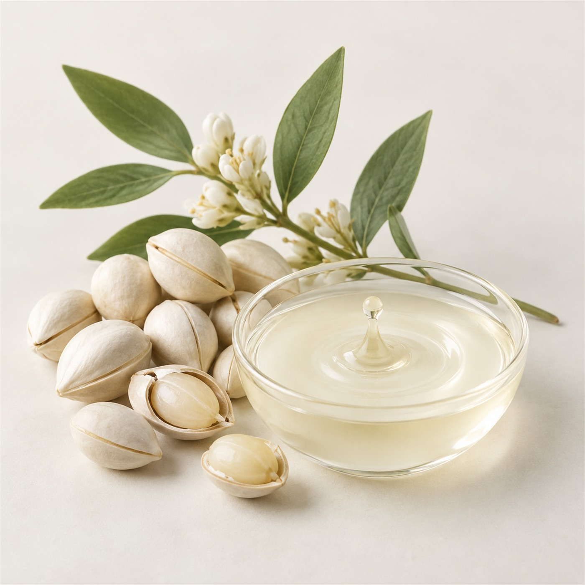

식물의 보호막에서 찾은
피부 장벽의 새로운 답
Phyto-Cera N은 식물 종자에서 얻은 지질 복합체를 피부 친화적 비율로 표준화한 장벽 강화 원료입니다.

Key Benefits
피부 수분 손실 개선 · 장벽 단백질 발현 · 민감 피부 사용 적합 · 수분산 제형 적용
Application
크림, 로션, 에센스, 마스크 등 다양한 스킨케어 제형에 적용할 수 있습니다. 상세 규격과 적용 가이드는 프로젝트 문의를 통해 제공됩니다.
샘플 및 자료 문의